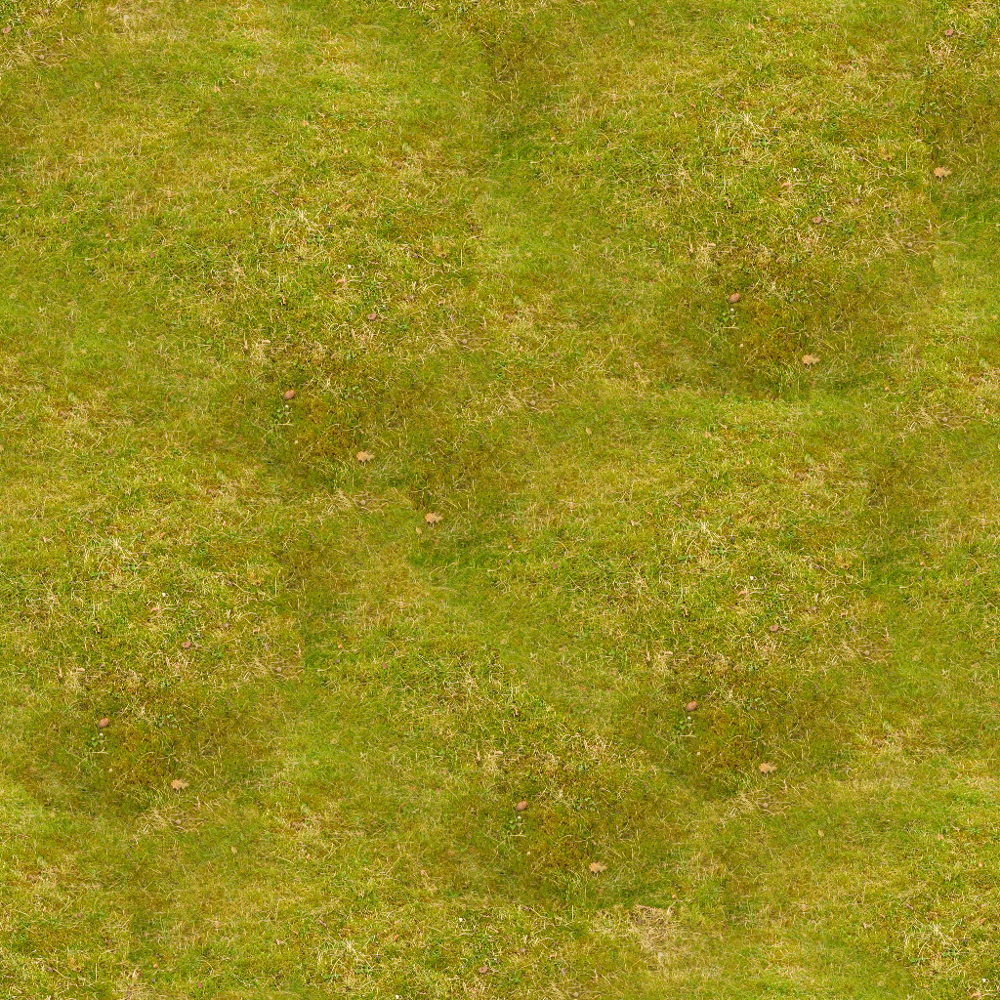
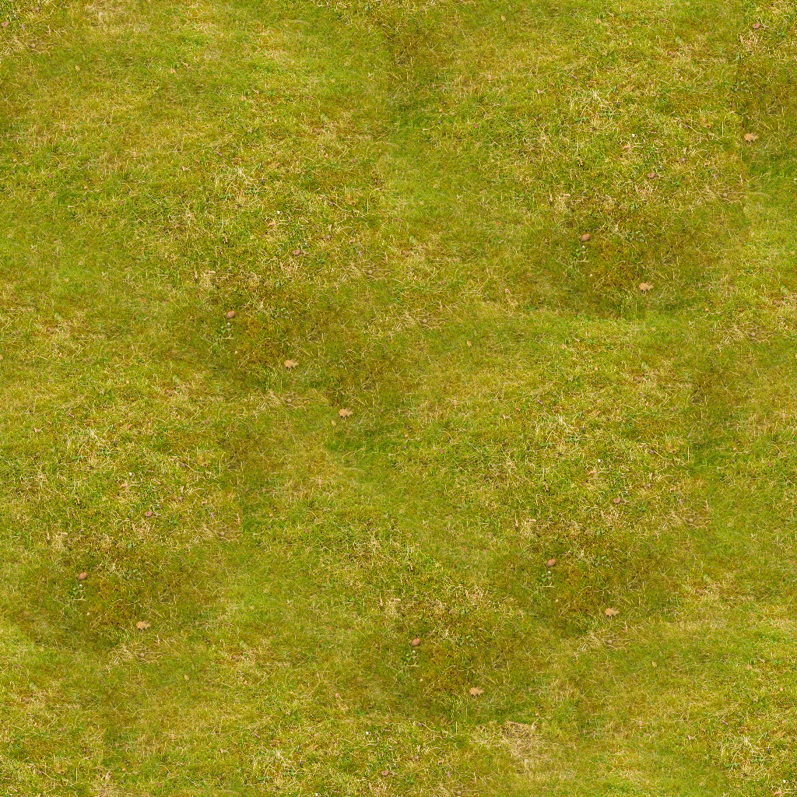
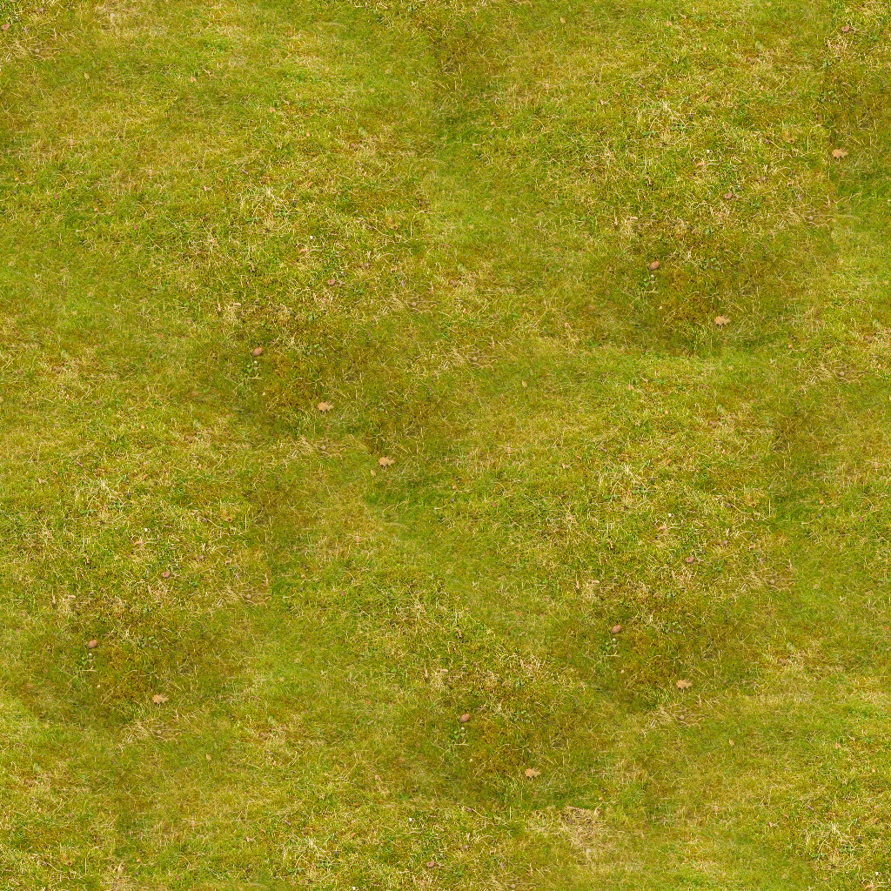

Google Cardboard: press the button to release the crate
Joystick: Press any button to release the crate
Mouse: Click in the screen to release the crate
Start: Press the VR button in the bottom right corner to enter in Virtual Reality mode and start.
